CONCEVOIR
Novice B.U.T. 1 Mener une conception partielle intégrant une démarche projet
Ressources
Les ressources utilisées pour cette compétence sont :
Ressources logicielles :
- Les logiciels "Eagle" et "Microcap"
- Des logiciels de calculs et de traitement de texte tel que "Exel" et "Word" pour répondre aux différentes questions pour les choix de composants et pour réaliser nos comptes rendus.
- Le logiciel "Quartus" pour programmer en VHDL.
Ressources théoriques :
- L'électronique en s'appuyant sur les cours de systèmes électroniques pour faire les schémas, les notions sur chaque composant, les théorèmes ainsi que les formules afin de faire tous les calculs nécessaires.
- Les cours de système d'information numérique pour établir des tables de vérités, des fonctions logiques, et apprendre à utiliser des portes logiques. Ainsi que pour effectuer des calculs en binaire.
- Les mathématiques pour effectuer tout type de calcul.
- L'anglais pour comprendre les documentations techniques des composants utilisés.
Ressources matérielles :
- L'utilisation de matériel électronique, comme des fils, des résistances et autres matériels de l'IUT. Ainsi que mon matériel personnel, pince coupante, pince plate et pince dénuder.
- Le matériel informatique.
- Carte ALTERA.
Composante essentiel
- En adoptant une approche holistique intégrant les innovations technologiques alignées sur la stratégie de l’entreprise pour répondre aux besoins des clients :
- En produisant tous les documents nécessaires au le client et les différents prestataires :
- En communiquant de manière appropriée avec les différents acteurs avant et pendant la phase de conception.
Lors de nos projets, nous avons pris en compte les diverses contraintes pratiques et techniques imposées par le cahier des charges.
Lors de notre projets, alimentation photovoltaïque nous avons fourni un rapport complet incluant les calculs et schémas nécessaires à la fabrication du produit.
Nous avons également fourni un support sous forme de notice afin de faciliter l'utilisation de notre produit part les utilisateurs.
Lors de nos projets, nous avons communiqué tout au long du processus afin d'ajuster la demande du client, car certains détails, comme la taille de la carte, n'avaient pas été spécifiés dans le cahier des charges. Grâce à des simulations dont les résultats étaient présentés au fil du développement, nous avons ajusté les besoins du client.
CE1
Cahier des charges :

CE2
Notice d'utilisation:

Apprentissages critiques
- APC1 : Produire une analyse
fonctionnelle d'un
système simple
- APC2 : Réaliser un prototype pour des
solutions
matérielles et / ou
logicielles
- APC3 : Rédiger un dossier de
fabrication à travers un
dossier de
conception

SAé: Testeur de batterie
Notre premier projet "concevoir"
était
le
testeur de batterie. L'objectif était de concevoir et implémenter un testeur permettant
de
vérifier
l'état de charge d'une batterie à l'aide de voyants lumineux.
APC1 :

APC2 :


APC3 :
Planning des séances:

- APC1 : Produire une analyse fonctionnelle d'un système simple
- APC2 : Réaliser un prototype pour des solutions matérielles et / ou logicielles
- APC3 : Rédiger un dossier de fabrication à travers un dossier de conception
Notre premier projet "concevoir" était le testeur de batterie. L'objectif était de concevoir et implémenter un testeur permettant de vérifier l'état de charge d'une batterie à l'aide de voyants lumineux.
APC1 :
APC2 :
APC3 :
Planning des séances:

Labtech :

produit fini :

SAé Chenillard
L'objectif de cette SAé est de concevoir une solution logicielle permettant l'animation lumineuse sur une carte ALTERA, en conformité avec le cahier des charges, et de réaliser les tests de vérification du chenillard numérique développé.
APC1 :
Analyse fonctionnelle :

APC2 :
Exemple de programme pour allumer les leds rouge

APC3 :
SAé Alimentation photovoltaïque
Dans le cadre de notre 2ème semestre en BUT GEII, nous devrons concevoir une alimentation pour un téléphone portable, et un « chenillard numérique » à microprocesseur, grâce à l’énergie solaire.
APC1:

APC2:

APC3:
SAé Robot
Dans le cadre de notre 2ème semestre en BUT GEII, nous devrons concevoir un robot suiveur de ligne. Ce projet exige que le robot suive une ligne de manière autonome, s'arrête sur commande sonore, et soit réalisé exclusivement avec des outils analogiques.
APC1 :

APC2 :

APC3
Mes meilleures réalisations dans CONCEVOIR
Ma réalisation préférée est la SAé alimentation photovoltaïque. Initialement, le sujet du projet ne suscitait pas un grand intérêt pour nous, car nous étions moins attirés par le domaine de l'énergie. Cependant, la découverte d'une erreur dans le fascicule concernant le courant requis par l'oscillateur a changé notre perception. Cette situation nous a intéressés, car corriger cette erreur et envisager des solutions alternatives se sont révélés être des défis stimulants.
Intermédiaire B.U.T. 2 Concevoir un système en fiabilisant les solutions proposées
Apprentissages critiques
- APC1 : Proposer des solutions techniques liées à l'analyse fonctionnelle.
- APC2 : Dérisquer les solutions techniques retenues.
Les Saé sur lesquelles nous avons travailler ne me permette de pas de valider les compétances ci-dessus